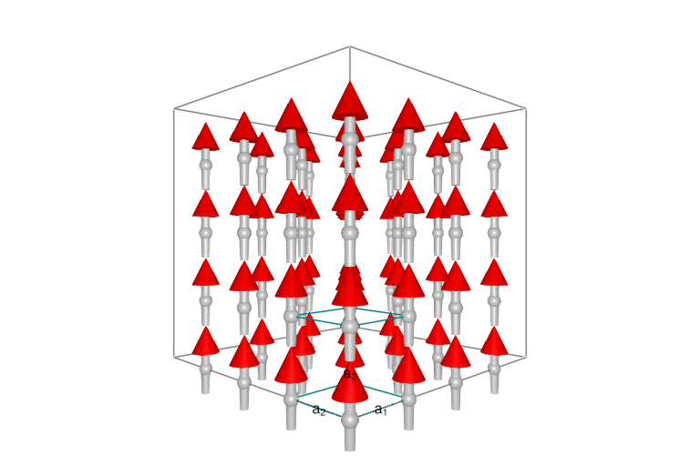

This is a test of literate. Here's a code block.
using Sunny, GLMakie
latvecs = lattice_vectors(1, 1, 1, 90, 90, 90)
cryst = Crystal(latvecs, [[0,0,0]])
sys = System(cryst, (4,4,4), [SpinInfo(1, S=1, g=2)], :SUN)System [SU(3)]
Lattice: (4, 4, 4)×1
Hopefully you see some spins below.
plot_spins(sys)
The end.
This page was generated using Literate.jl.